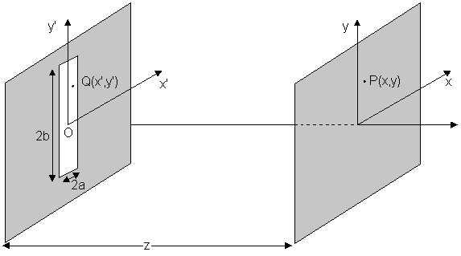

|
Fresnel Diffraction, Single Slit: Theory
Fresnel Diffraction from a Rectangular Aperture
Consider a monochromatic plane wave of wavelength l that is
normally incident upon a rectangular aperture of width 2a in the x-direction and
width 2b in the y-direction, which is centered about the origin in the plane z =
0. Let E0ibe the amplitude of the incident electric field. Let P=(x,y,z)
be a point on an observation screen which is a distance z from the aperture plane
and let Q=(x',y',z') be a point inside the aperture (see Fig.
1).
 |
| Fig 1: Basic Geometry |
The Fresnel diffraction formula tells us that the electric field at the point P
is given by the expression:
where k=2p /l . The term
exp(ikz) is unimportant and will be omitted from here on. The two integrals above
separate, so Eq. (1.1) can be rewritten as:
where
It is a straightforward matter to show that
where C(u) and S(u) the well-known
Fresnel integral functions,
and the arguments of the C and S functions on the right hand side of Eqs.
(1.5) and (1.6) are
Here Nx is the Fresnel number for the x-direction and Ny
is the Fresnel number for the y-direction:
The intensity at the point P is given by the expression:
It then follows from Eqs. (1.2), (1.5), (1.6), and (1.13) that
where Ii = (1/2)ceoE0i2
is the intensity of the incident light. Here c is the speed of light in vaccuo, eo is the permittivity of free space
|